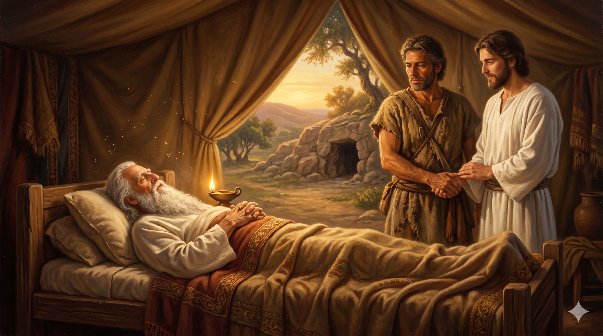
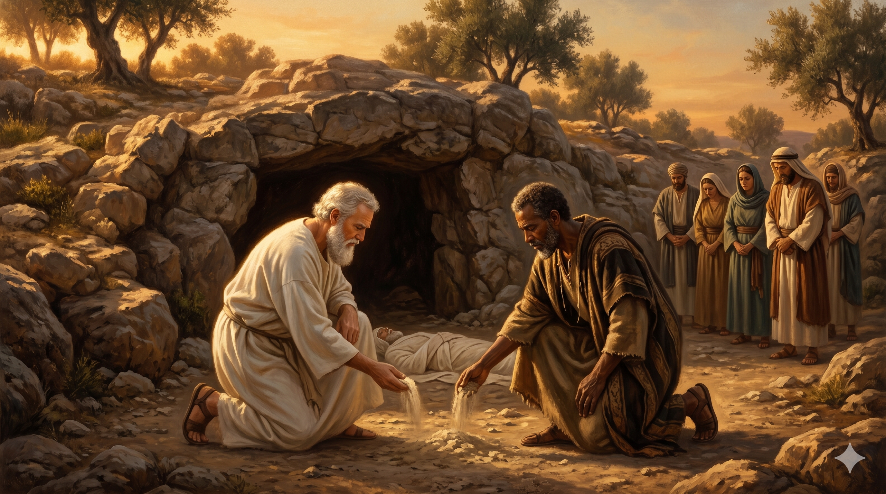

헤브론의 저녁 노을, 백칠십오 세 아브라함이 평온한 얼굴로 마지막 숨을 내쉬는 침상의 장면. 침상 곁에는 늙은 두 아들 이삭과 이스마엘이 함께 서 있고, 멀리 막벨라 굴이 보이는 골짜기 — 한 나그네 인생이 약속의 땅에서 조용히 마쳐지는 거룩한 시간.
아브라함의 향년이 백칠십오 세라 그의 나이가 높고 늙어서 기운이 다하여 죽어 자기 열조에게로 돌아가매 그의 아들들인 이삭과 이스마엘이 그를 마므레 앞 헷 족속 소할의 아들 에브론의 밭에 있는 막벨라 굴에 장사하였으니 이것은 아브라함이 헷 족속에게서 산 밭이라 아브라함과 그의 아내 사라가 거기 장사되니라 아브라함이 죽은 후에 하나님이 그의 아들 이삭에게 복을 주셨고 이삭은 브엘라해로이 근처에 거주하였더라 — 창세기 25:7–11
아브라함이 일흔다섯 살에 갈대아 우르를 떠난 그 날부터 백칠십오 세에 헤브론에서 눈을 감기까지, 정확히 백 년의 나그네 길이 흘렀습니다. 그는 결코 약속의 땅 한 평도 자기 이름으로 정복하지 않았습니다. 그가 소유한 것은 오직 한 가지 — 사라를 묻기 위해 은 사백 세겔을 주고 산 막벨라 굴 한 자리뿐이었습니다. 그러나 성경은 그의 마지막을 이렇게 적습니다. "그의 나이가 높고 늙어서 기운이 다하여 죽었다." 히브리어로는 "사베아" — "충만하게 채워진" 노인이라는 뜻입니다. 세상의 잣대로는 빈손이었으나, 하늘의 잣대로는 가득 차서 떠난 사람이었습니다. 인생의 끝에 무엇을 가졌느냐가 아니라, 무엇으로 채워졌느냐가 한 사람의 진짜 결산임을 그의 마지막이 가르쳐 줍니다.
더 깊이 마음을 누르는 한 장면이 있습니다. "그의 아들들인 이삭과 이스마엘이 그를 막벨라 굴에 장사하였다." 십삼 년 동안 만나지 못했을 두 형제가 — 약속의 아들과 광야로 쫓겨났던 아들이 — 아버지의 무덤 곁에 함께 섰습니다. 한때 갈라졌던 가정이 아버지의 죽음 앞에서 마지막으로 한 번 더 만난 그 자리, 거기에는 아브라함의 평생이 묻어 있는 한 가지 사실이 있습니다 — 그는 끝까지 두 아들 모두를 자기 자식으로 사랑했고, 두 아들 모두 마지막엔 그 아버지의 곁으로 돌아왔다는 것입니다. 인생의 끝에서 "내 자식들"이라는 한 마디로 모일 수 있는 사람이라면, 그것은 그가 살아온 모든 세월에 대한 가장 따뜻한 증명입니다. 약속의 땅에 처음으로 묻힌 사람 곁에, 약속의 땅을 함께 바라본 자식들이 흙 한 줌을 덮어 주는 그 거룩한 침묵 — 거기서 한 시대가 닫히고, 새 시대가 열립니다.

막벨라 굴 입구, 흰 수염의 이삭과 검게 그을린 이스마엘 두 형제가 아버지의 시신 위에 흙을 덮으며 마지막 묵례를 하는 장면. 두 사람의 손등이 살짝 닿아 있고, 가나안의 늦은 햇살이 그 손 위를 비춘다.
아브라함의 마지막은 우리에게 한 가지 질문을 남깁니다. "당신은 어떤 마지막을 향해 살고 있습니까?" 그는 평생 약속의 성취를 자기 눈으로 다 보지 못하고 떠났습니다. 그러나 흔들리지 않았습니다. 히브리서 11장은 그를 가리켜 "이 사람들은 다 믿음을 따라 죽었으며 약속을 받지 못하였으되 그것들을 멀리서 보고 환영하며"라고 말합니다. 인생에는 끝까지 답을 받지 못하는 기도가 있습니다. 끝까지 매듭이 풀리지 않는 자식의 문제가 있습니다. 그러나 아브라함처럼 — 약속을 멀리서 바라보면서도 그 약속을 손에 쥐고 떠날 수 있다면, 그 사람은 결코 빈손이 아닙니다. 오늘 당신이 붙들고 있는 약속이 응답되지 않은 채 길어지더라도, 그 손을 펴지 마십시오. 그 약속을 끝까지 붙드는 손, 그것이 마지막에 "충만하게 채워진" 인생의 표지가 됩니다.
또한 우리는 이 마지막 장면에서 "관계의 회복"을 봅니다. 아브라함의 마지막을 더 빛나게 한 것은 그의 재산도, 명성도 아니었습니다. 그것은 한때 갈라졌던 두 아들이 아버지의 무덤 앞에 다시 함께 섰다는 사실이었습니다. 우리도 인생의 끝을 미리 그려 보아야 합니다. 그 자리에 누가 함께 있기를 원하십니까? 그 사람들과 지금 화해해야 할 것이 있다면, 더 이상 미루지 마십시오. 한 마디 사과, 한 통의 전화, 한 번의 포옹이 — 평생을 미루어 둔 매듭을 풀어 줄 수 있습니다. 마지막에 당신의 침상 곁에 둘러서는 사람들의 얼굴이, 당신이 살아온 인생의 가장 정직한 증명이 될 것입니다.
아브라함은 빈손으로 떠났으나 충만하게 채워졌습니다.
세상은 무엇을 손에 쥐고 떠나느냐를 묻지만, 하늘은 무엇으로 채워져 떠나느냐를 묻습니다.
오늘, 당신의 손이 아니라 당신의 영혼을 무엇으로 채우고 계십니까?